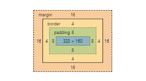
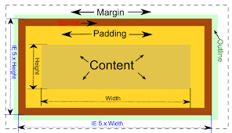

Każdy element w dokumencie HTML, otacza się prostokątnym obszarem zwanym pudełkiem
(ang. Box model). Pudełko składa się z kilku warstw:
| Content | Zawartość elementu (np.: tekst, obrazek) |
| Padding | Otaczające marginesy wewnętrzne, odstęp między obramowaniem i zawartością elementu |
| Border | Obramowania wokół zawartości elementu, ma styl i kolor. |
| Margin | Marginesy wokół ramki (margines zewnętrzny). Jest to pusty obszar wokół ramki, który nie ma koloru tła i jest przeźroczysty. |
|
 |
Grafika obrazująca różnicę pomiędzy paddingiem i marginesem wraz z opisemPadding określa przestrzeń wokół danego elementu, np: lub , natomiast margines przestrzeń pomiędzy elementami. |
|  |
|
Jak widać na rysunku, padding oznaczony jest kolorem niebieskim. Określa on wielkość Element ten posiada również margines zaznaczony kolorem |